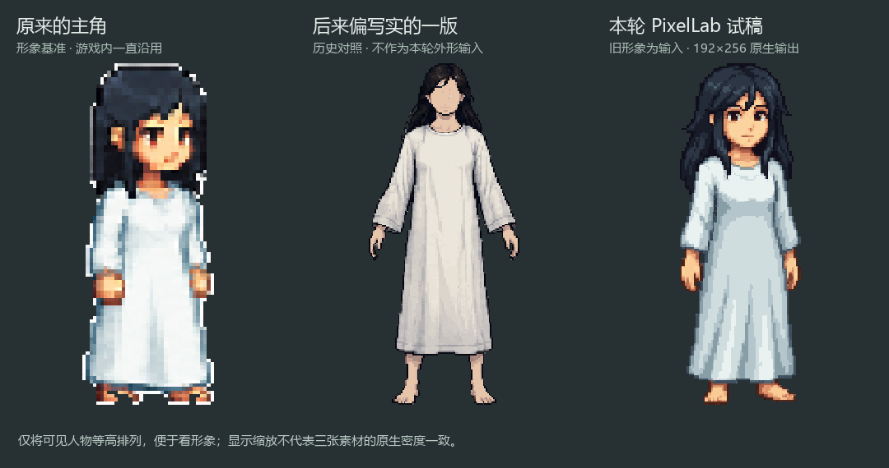
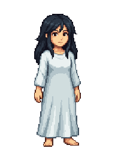
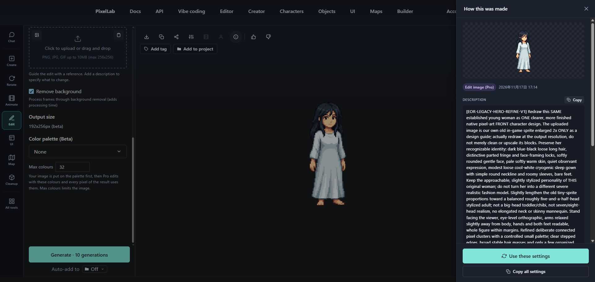

2026-11-17。身份参考回到游戏一直沿用的旧精灵；PixelLab 官网 Pro 重绘。没有替换游戏角色或继续3D制作。
制作说明 · 原生PNG · Aseprite母版 · 来源／实扣

保留蓝黑长发、柔和脸部、宽松浅色休眠服。仍待确认：风格化比例是否合适、袍长偏长、脸部略侧转和眼部信息量。尚非最终建模图。

一次生成消耗10，账户36→46／2,000，剩1,954；重置／续费显示12月13日。主体没有手绘修改。
